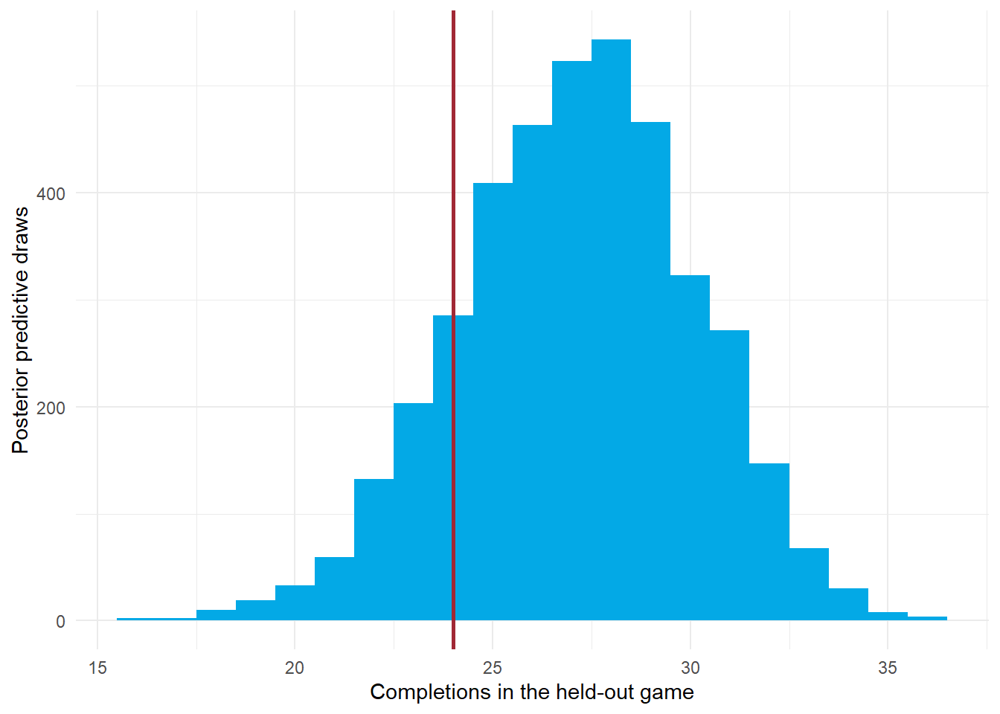
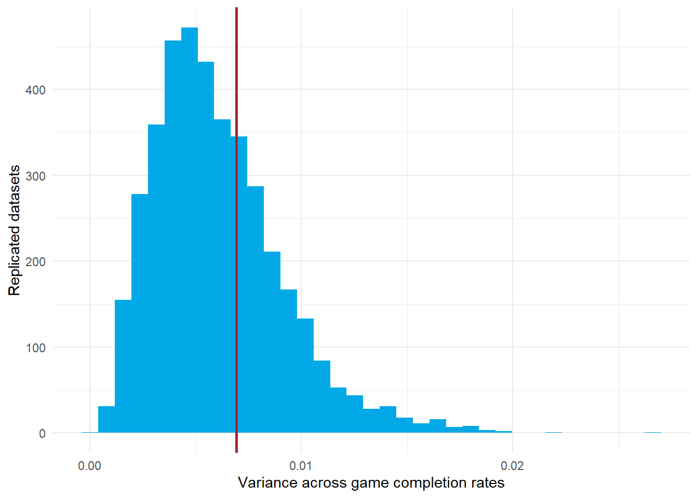

write a fully Bayesian version of the quarterback completion model from Tutorial 4.2;
translate its likelihood and priors into custom Stan code and fit it with cmdstanr;
fit the same statistical model with rstanarm and compare posterior summaries;
check chains, warmup, effective sample sizes, R-hat, and divergent transitions;
simulate held-out completions and calculate log posterior predictive scores for model comparison; and
calculate and interpret a posterior predictive Bayesian p-value.
2 The player-effect model from Tutorial 4.2
For attempt by quarterback , let for a completion and otherwise. The model is
Symbol
Meaning
Quarterback index, with quarterbacks in training data
Attempt within a quarterback
Quarterback completion probability under this model
Population intercept on the log-odds scale
Quarterback deviation on the log-odds scale
Population standard deviation of quarterback deviations
The inverse logit is for a real number . Normal notation uses variance as its second argument. Stan’s normal() instead takes a standard deviation, so normal(0, 2.5) implements .
Attempts are conditionally independent given the player probabilities, and player effects are conditionally independent given . This intercept-only model assumes each quarterback’s probability stays constant over the modeled period. It describes completion rates for the filtered pass sample, without adjusting for pass difficulty, receivers, or defenses.
The likelihood and player distribution are the same as in 4.2. The explicit priors for and complete the Bayesian hierarchy. The posterior jointly describes the intercept, player effects, and population spread. The prior has density for and mean 1. It permits small player variation while reducing prior weight on large standard deviations. The constants above are teaching choices that warrant sensitivity checks.
2.1 Why Stan is useful
The logistic hierarchy has no simple conjugate posterior formula. Stan computes dependent draws representing its joint posterior using Markov chain Monte Carlo (MCMC). Its default sampling method is Hamiltonian Monte Carlo (HMC) through the No-U-Turn Sampler (NUTS), which uses derivatives of the log posterior to explore it. Stan adapts sampling settings during warmup; NUTS chooses trajectory lengths during sampling. It does not run the Gaussian Gibbs updates from 4.4. Stan sampling documentation
For a posterior quantity and retained joint draws ,
where denotes the training outcomes. Quantiles of these draws give credible intervals. Dependence among draws makes the effective sample size smaller than the raw draw count in many cases.
3 Training games and held-out games
We fit games through Week 10 and reserve later games for prediction. Whole games stay together. We restrict the prediction example to quarterbacks seen in training, so their player effects already have posteriors. Predicting an unseen quarterback would require drawing a new player effect from the population distribution.
Because there are no attempt-level covariates, we can aggregate attempts within each quarterback-game without losing likelihood information about the parameters. Let be completions and attempts for quarterback-game row . If identifies its quarterback, then
Here is the vector of player effects. The game is an aggregation unit, not an added random effect. The binomial likelihood differs from the attempt-level Bernoulli likelihood only by combinatorial factors that do not depend on the parameters. This aggregation would generally fail if completion probabilities varied within a row because of covariates.
input <-prepare_completion(passes, cutoff =10L)train <- input$traintest <- input$testplayers <- input$players# train and test each contain one row per quarterback-game.train %>%select(week, game_id, passer, attempts, completions) %>%slice_head(n =6) %>% knitr::kable()
prepare_completion() is provided in R/bayesian_player_helpers.R. It sets the player factor levels from training data and uses those same levels in test data. Held-out completion outcomes do not enter fitting or prior selection. Predictive distributions below condition on the held-out attempt counts; they do not forecast playing time or the number of attempts.
4 Custom Stan through cmdstanr
4.1 The complete Stan program
The file R/completion_player.stan contains the complete model. It writes with . This non-centered parameterization represents the same player distribution while often helping sampling when player information is weak.
data {int<lower=1> J; // Quarterbacks in training dataint<lower=1> G; // Training quarterback-game rowsarray[G] int<lower=1> n; // Attempts per rowarray[G] int<lower=0> s; // Completions per rowarray[G] int<lower=1, upper=J> qb; // Quarterback indexint<lower=1> G_test; // Held-out quarterback-game rowsarray[G_test] int<lower=1> n_test;array[G_test] int<lower=1, upper=J> qb_test;}parameters {real alpha;real<lower=0> tau;vector[J] z;}transformed parameters {vector[J] u = tau * z;vector[J] theta = inv_logit(alpha + u);}model { alpha ~ normal(0, 2.5); tau ~ exponential(1); z ~ std_normal(); s ~ binomial_logit(n, alpha + u[qb]);}generated quantities {array[G] int s_rep;array[G_test] int s_test_rep;for (g in1:G) s_rep[g] = binomial_rng(n[g], theta[qb[g]]);for (g in1:G_test) s_test_rep[g] = binomial_rng(n_test[g], theta[qb_test[g]]);}
Stan block
Role
data
Training counts, player indices, and held-out attempt counts and indices
parameters
Unknown alpha, tau, and standard-normal player effects z
transformed parameters
Player deviations u = tau * z and probabilities theta
model
Priors and the training-data likelihood
generated quantities
Replicated training and held-out completion counts for each posterior draw
G and G_test count training and test quarterback-game rows. J counts training quarterbacks. n and s are training attempts and completions, and qb maps each row to a player index. n_test and qb_test supply the prediction settings. s_rep and s_test_rep are simulated completion counts. There is no test-outcome likelihood.
4.2 Data list and fitting call
stan_data <-list(J =length(players), G =nrow(train),n = train$attempts, s = train$completions,qb =as.integer(train$passer),G_test =nrow(test), n_test = test$attempts,qb_test =as.integer(test$passer))
The code below performs a new fit. The rendered tutorial reads verified saved results so it opens without recompiling. Run the complete script R/fit_completion_stan.R from the Lecture 4 folder to rebuild both Bayesian fits and their predictions. cmdstanr requires an installed CmdStan and a working C++ toolchain. On Windows, follow the CmdStanR toolchain instructions. CmdStanR installation guide
CmdStanR specifies warmup and sampling separately: iter_warmup = 1000 and iter_sampling = 1000 give 2,000 iterations per chain. Four chains therefore retain 4,000 posterior draws in total. Warmup adapts the sampler and is excluded from posterior summaries. adapt_delta sets the target acceptance probability used in adaptation. max_treedepth limits NUTS trajectory expansion.
completion_draws() is included in R/bayesian_player_helpers.R. It turns the draw matrix into named player and game matrices while preserving the common row order of joint draws. fit_stan$draws() retains chain information when requested with format = "array"; fit_stan$summary() provides posterior summaries.
sd measures posterior uncertainty; mcse_mean estimates numerical uncertainty in the computed posterior mean. These are different sources of uncertainty.
5 The same model through rstanarm
rstanarm supplies precompiled Stan regression models behind familiar R formulas. It uses RStan internally to fit a Bayesian model. The custom program uses CmdStanR, but rstanarm does not offer a CmdStanR backend. The likelihood and priors can still match across these interfaces. rstanarm model documentation
For this single random intercept, the covariance matrix is one-by-one. decov(shape = 1, scale = 1) gives its standard deviation a Gamma prior with shape 1 and scale 1, equivalent to . Thus the likelihood and priors match the custom program. That equivalence does not automatically extend to larger covariance matrices. rstanarm prior documentation
Different seeds, parameterizations, and finite samples can give small numerical differences. Compare differences with Monte Carlo uncertainty before interpreting them as statistical disagreements. Using package default priors would not guarantee the same model.
5.1 Player probabilities and the lme4 comparison
For player , transform each joint draw using . The posterior mean of a transformed parameter generally differs from transforming posterior means.
posterior_epred() returns draws of expected outcomes. With attempts = 1 in player_settings, these expected completion counts equal player probabilities. posterior_predict() instead generates outcome draws, adding binomial sampling variability.
The lme4 comparison refits the 4.2 model on these same training observations. Its player deviations are conditional modes at fitted population parameters. Full Bayesian probability summaries integrate over population uncertainty; exact equality with glmer() predictions is not expected.
6 Sampling checks before interpretation
A trace plot shows retained draws in sampling order, separately by chain. Look for stable exploration and agreement across chains. Rank-normalized compares chain behavior, while bulk and tail effective sample sizes measure information for central summaries and tails. Aim for and sufficient effective draws for the quantity being reported. These checks support computation, not the realism of the likelihood. Stan diagnostic guidance
Retained draws of the between-quarterback standard deviation in four custom Stan chains.
A divergence warns that numerical integration had difficulty exploring part of the posterior. A treedepth hit means a trajectory reached its configured expansion limit. Investigate warnings, scaling, priors, and parameterization before reporting player rankings. Increasing iterations alone does not repair divergences.
7 Held-out log posterior predictive density
Choose Patrick Mahomes’s first included game after Week 10. Let denote completions in that game and its attempt count. Given training outcomes , the predictive distribution is
Here indexes Mahomes and is a possible future completion count. The posterior for already integrates over and . For draw , simulate . The Stan program does this in generated quantities; it uses no held-out completions to update the posterior.
For predictive evaluation, let be the observed completion count in this held-out game. The log posterior predictive score is
Here is one game’s log score, is the number of retained posterior draws, and indexes those draws. The notation means the probability mass . Because completion counts are discrete, we evaluate a probability mass, although the conventional name is log posterior predictive density.
Average the probability masses over posterior draws, then take the natural logarithm. This integrates uncertainty about player probability. It generally differs from averaging the log probability masses or inserting a single posterior mean probability into the binomial formula. Stan held-out evaluation guidance
Evaluate the observed count directly with dbinom(). The helper below computes the log of an average probability using a stable formula that avoids numerical underflow.
theta_draws contains one Mahomes probability per posterior draw. log_prob contains the corresponding conditional binomial log probability masses. Within log_mean_exp(), a is their maximum and exp() reverses the natural logarithm. The result is , calculated without first forming potentially tiny probabilities.
Mahomes completed 24 of 39 included attempts. The fitted model assigns this exact count about 7.2% posterior predictive probability, giving a log score of about . This is a score for an observed outcome, rather than a tail probability or a probability that the model is true. For the same outcome, a higher log score means the model assigned it more predictive probability.
ggplot(data.frame(completions = predicted_counts), aes(completions)) +geom_histogram(binwidth =1, boundary =-0.5, fill ="#03a9e6") +geom_vline(xintercept = heldout_game$completions, color ="#a12835", linewidth =1) +theme_minimal() +labs(x ="Completions in the held-out game", y ="Posterior predictive draws")

Posterior predictive completions for Mahomes’s first held-out game. The vertical line marks the observed count.
A credible interval for describes uncertainty about a completion probability. A predictive interval for also includes randomness in future attempts. Keep the same sampled player probability across all attempts in a game within a posterior draw.
The equivalent rstanarm prediction supplies the desired number of trials through newdata. Setting completions = 0 is a placeholder: the binomial trials equal attempts regardless of this placeholder. Posterior prediction documentation
future_game <- heldout_gamefuture_game$completions <-0Lpredicted_arm <-posterior_predict(fit_arm, newdata = future_game, seed =435)quantile(predicted_arm[, 1], c(0.025, 0.5, 0.975))# theta_arm was obtained with posterior_epred() at one attempt above.mahomes_index <-match("Patrick Mahomes", players)heldout_log_score_arm <-log_mean_exp(dbinom( heldout_game$completions, heldout_game$attempts, theta_arm[, mahomes_index], log =TRUE))
7.1 Scores across held-out games
One game’s score illustrates the calculation. For comparing predictive models, evaluate all the same held-out games. Let be their number, index a held-out quarterback-game row, its observed completions, its attempts, and its quarterback. Define the sum of game-wise log predictive scores as
Here is the random completion count for row , and denotes the total held-out log predictive score. Each game’s predictive probability uses the training posterior, with no updating on earlier held-out outcomes. This is a sum of marginal game scores, rather than the log probability of the entire held-out dataset jointly.
qb_index[g] identifies the posterior probability column for row g, and game_log_scores contains one score per held-out row. The 246 held-out quarterback-games give a total score of about , or per row. These values summarize this model’s predictions. Their magnitude alone does not establish that a model predicts well.
Compare alternatives, such as complete pooling versus partial pooling, using the same training/test split, outcomes, and aggregation unit. Higher total or mean log scores indicate better predictive performance on that test set. A comparison between CmdStanR and rstanarm fits with matching likelihoods and priors primarily checks implementation agreement. Small Monte Carlo differences do not establish a better statistical model.
The held-out average estimates expected log predictive performance for similar future games. The term expected log predictive density (ELPD) refers to averaging the log predictive score over future outcomes. The posterior averaging inside each game’s predictive probability is a separate operation. loo predictive-score documentation
A held-out upper-tail probability, , can help identify an unusually low observed count, but it is not a score to maximize when comparing models. A model that consistently predicts too many completions can have large upper-tail probabilities. Keep the predictive plot and interval for interpretation, and use log predictive scores for comparison. The training-data Bayesian p-value below checks a particular feature of the model.
8 Posterior predictive checks and a Bayesian p-value
To check a model, simulate replicated training outcomes from posterior draws, retaining the observed game attempt counts. Compare a statistic of these replications with the same statistic of the observed training data.
Use Mahomes’s variation in completion rates across training games. For his training games, define and their unweighted mean . Our discrepancy statistic is
where is the vector of his game completion counts and the sums run over his training games. The replicated statistic uses simulated counts and the same attempt counts. This checks game-to-game variation beyond what the constant-probability model predicts, rather than merely checking the fitted total completions.
The posterior predictive Bayesian p-value is
Here is all training data used to fit the hierarchy; is the number of retained draws; equals 1 when statement holds and 0 otherwise; and is a simulated training-game count vector at draw .
Variance of Mahomes’s training-game completion rates
0.0069
0.006
0.3322
ggplot(data.frame(T = T_replicated), aes(T)) +geom_histogram(bins =35, fill ="#03a9e6") +geom_vline(xintercept = T_observed, color ="#a12835", linewidth =1) +theme_minimal() +labs(x ="Variance across game completion rates", y ="Replicated datasets")

Replicated variation in training-game completion rates, with the observed statistic marked.
Values near 0 indicate the observed variation is unusually large relative to replications; values near 1 indicate it is unusually small for this upper-tail definition. Intermediate values show no obvious discrepancy for this particular statistic. They do not validate every feature of the model.
A Bayesian p-value is not the probability that the model is true. Because the training data both fit and check the model, these p-values are not generally uniform under a correct model and should not automatically be read against a frequentist 0.05 cutoff. Pair them with graphical checks and held-out prediction. Stan predictive-check guidance
9 Practice
Which two additional priors turn the 4.2 logistic player model into the full Bayesian hierarchy used here?
Why is aggregating to quarterback-game binomial counts valid for this model?
Why can plogis(mean(alpha) + mean(u_j)) differ from the posterior mean of a player probability?
What additional uncertainty does a predictive interval include compared with a credible interval for ?
How do a held-out log predictive score and a training-data posterior predictive Bayesian p-value differ?
10 Key takeaways
A full Bayesian player model includes priors for unknown population parameters.
Custom Stan through cmdstanr and formula-based rstanarm can fit the same model when their likelihoods and priors match.
A posterior predictive distribution includes parameter uncertainty and future outcome randomness.
Held-out log predictive scores evaluate probability assigned to observed outcomes. Compare models across the same held-out games, with higher scores indicating better predictive performance.
A posterior predictive Bayesian p-value is a statistic-specific model check, separate from held-out predictive evaluation.